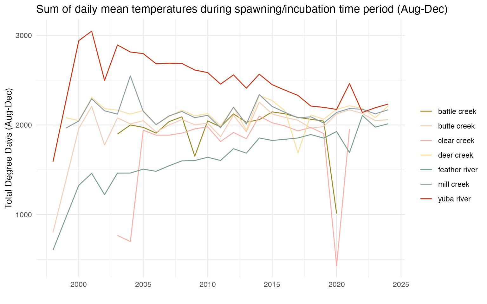
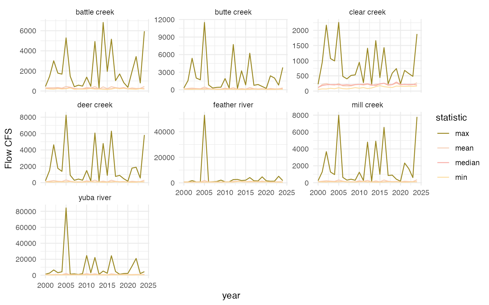

Stock Recruit Covariates
sr_covariates.RmdThere are multiple covariates used in SR JPE modeling that were developed through separate but related processes. There are currently two documents describing covariate selection and processing for different models: (1) Stock Recruit Covariates (this document) and (2) Adult Model Covariates.
The goal of this document is to process covariates for use in SR JPE stock recruitment modeling.
Selecting Stock Recruit Environmental Covariates
FlowWest conducted initial literature review and planning to outline covariates that are expected to be important based on past research. This work can be found here. FlowWest reviewed covariates with the SR JPE Modeling Advisory Team to generate the following environmental covariates table to test within the SR model.
Table 1. Summary of covariates to test in stock recruit modeling based on preliminary literature review.
| Variable Name | Description |
|---|---|
| si_gdd_spawn | Additive measure of temperatures during the adult upstream migration and spawning window. This window is defined as August-December. The steps involved in calculating this value include: obtain daily mean temperature values for each stream (if data are available at a finer resolution e.g. 15-min intervals then the daily mean is calculated), filter the dataset to Aug-Dec, add the daily mean values by stream and year. Missing values are filled in with either the rolling 3-day mean or if that is not available the monthly mean. |
| si_above_13_temp_day | Day of the year when water temperature exceeds 13C representing thermal stress during spawning and incubation in tributaries. 13C is recognized as the upper limit of water temperature for spawning and incubation. The data are not filtered to the spawning time period as this threshold is typically met before August; though Jan and Feb are filtered out as adults are not yet in the tributaries. The steps involved in calculating this value include: obtain daily max temperature values for each stream, calculate the 7-day rolling mean of max values (any missing values are filled in the weekly mean of the 7DADM), find the min date when the 7DADM is greater than 13 |
| si_above_13_temp_week | This is the same as si_above_13_temp_day except instead of a day of the year it is the week of the year. |
| si_weekly_max_temp_max | Weekly max water temperature for tributaries and the mainstem Sacramento during the spawning and incubation time period. This window is defined as August-December. Note that daily max temperatures are not available for Sacramento so daily mean values are used. The steps involved in calculating this value include: obtain daily max temperature values for each stream, filter the dataset to Aug-Dec, calculate the weekly max value for each year and stream, calculate the max value across all weeks. |
| si_weekly_max_temp_mean | This is the same as si_weekly_max_temp_max except when summarizing across all weeks the mean value is calculated |
| si_weekly_max_temp_median | This is the same as si_weekly_max_temp_max except when summarizing across all weeks the median value is calculated |
| si_mean_flow | Mean flow during the spawning and incubation time window. This window is defined as August-December. The steps involved in calculating this value include: obtain daily max flow values for each stream, filter the dataset to Aug-Dec, find the mean flow by stream and year. |
| si_max_flow | This is the same as si_mean_flow except the max flow by stream and year is calculated. |
| si_min_flow | This is the same as si_mean_flow except the min flow by stream and year is calculated. |
| si_median_flow | This is the same as si_mean_flow except the median flow by stream and year is calculated. |
| rr_mean_flow | Mean flow during the rearing time period. This window is defined as November-July. The steps involved in calculating this value include: obtain daily max flow values, filter the dataset to Nov-July, find the mean flow by stream and year. |
| rr_max_flow | This is the same as rr_mean_flow except the max flow by stream and year is calculated. |
| rr_min_flow | This is the same as rr_mean_flow except the max flow by stream and year is calculated. |
| rr_median_flow | This is the same as rr_mean_flow except the max flow by stream and year is calculated. |
Preparing Covariates
This document focuses on preparing flow and temperature covariates for use in stock recruit modeling and exploratory analysis.
Temperature
Temperature has been found to influence spawning and rearing. Therefore it is expected to affect the translation from stock to recruit. Temperature can be included in multiple different formats which target different lifestages including:
- Number of degree days
- Day of year when 7DADM is above 13 C
- Maximum weekly stream temperature
- In development: Emergence date (calculated from temperature and spawning date)
Number of degree days
Degree days is defined here as the sum of the daily mean temperatures between August and December (spawning time period) by year and stream.
Note that for streams with multiple locations the max daily mean was selected. Clear Creek 2020 value is low which may be due to a few missing data points in December. This approach is vulnerable to missing data.

Figure 1. Annual sum of daily mean temperatures during spawning and incubation time period (Aug - Dec)
Sacramento thermal stress
In the mainstem stock recruit we use the sum of days greater than 20 degrees to indicate thermal stress which could contribute to mortality ocurring in the tributaries between adult observation and juveniles at the rotary screw trap. Note that adult data from tributaries is used as the stock in the mainstem stock recruit model.

Day of year when 7DADM drops above/below 13 C
This covariate is defined as the day of the year and week when the 7DADM is above 13C
- Data are not filtered to the spawning time period (Aug-Dec) as this threshold is typically met before August. Data do not include Jan and Feb as spring run are not in tributaries yet
- Below 13C is not included as this does not make sense in terms of impact on salmon. Temperatures are rarely below 13C during the spawning time period and if they are, unlikely to be significantly cold enough to have an impact
- Note, we currently do not have max daily temperatures for the Sacramento so mainstem is not included. There are a few datapoints based on the plot below that are worth further investigation.
Plot of week where threshold is met (above 13 C) for all years and streams

Figure 2. Plot of week where threshold is met (above or below 13) for all years and streams
Max temperature
This covariate is defined as the summarized annual weekly max temperature.
- Summarizes the weekly maximum temperature for each stream (meaning it finds the max across all sites/subsites) across years within the spawning period. Note that the Sacramento River temperature data does not currently include a daily maximum so the weekly max is the max of the daily mean.
- Summarize the weekly max for each stream and year by finding the mean, median, and max.

Figure 3. Plot of mean, median, max of the maximum weekly temperature
Emergence date
In development
Emergence data encompasses the effect of temperature and is expected to affect growth and survival of juveniles. Modeled following Kaylor et al. 2022. Daily Ei values are summed from the spawn date, and emergence is assumed to occur on the first day where Ei exceeds 1.
Ei = 1 / exp [loge a - loge(Ti - b)]
logea = 6.872 b = -0.332 Ti = mean daily temperature Ei = daily contribution to development (ranging from 0 to 1)
Constants derived from Beacham and Murray (1990)
Flow
Precipitation and streamflow have been found to influence spawning and rearing. Therefore it is expected to affect the translation from stock to recruit. Streamflow can be included in multiple different formats including:
- Mean, median, max precipitation (or streamflow)
Mean, median, max flow
These covariates summarize daily max flows as annual mean/median/max/min within the spawning and rearing time period.

Figure 4. Plot of annual summarized (mean, median, max, min) max flows during the spawning and incubation time period (Aug - Dec)

Figure 5. Plot of annual summarized (mean, median, max, min) max flows during the rearing time period (Tributary: Nov - July, Sacramento: Jan - July)
Combine and Save Covariate Data
All covariate datasets are combined into one table and saved as an
export from the SRJPEdata package. This data can be accessed using
SRJPEdata::stock_recruit_covariates and can be joined to
the SRJPEdata::site_lookup table in order to fill in
covariates for each site and year.
The first 10 rows of SRJPEdata::stock_recruit_covariates
are shown below.
| year | stream | lifestage | covariate_type | covariate_structure | value |
|---|---|---|---|---|---|
| 1998 | butte creek | spawning and incubation | temperature | gdd_spawn | 801.500000 |
| 1998 | butte creek | spawning and incubation | temperature | above_13_temp_day | 274.000000 |
| 1998 | butte creek | spawning and incubation | temperature | above_13_temp_week | 40.000000 |
| 1998 | butte creek | spawning and incubation | temperature | weekly_max_temp_max | 17.000000 |
| 1998 | butte creek | spawning and incubation | temperature | weekly_max_temp_mean | 10.750000 |
| 1998 | butte creek | spawning and incubation | temperature | weekly_max_temp_median | 10.000000 |
| 1998 | feather river | spawning and incubation | temperature | gdd_spawn | 610.685252 |
| 1998 | feather river | spawning and incubation | temperature | weekly_max_temp_max | 10.198657 |
| 1998 | feather river | spawning and incubation | temperature | weekly_max_temp_mean | 7.564606 |
| 1998 | feather river | spawning and incubation | temperature | weekly_max_temp_median | 7.434778 |